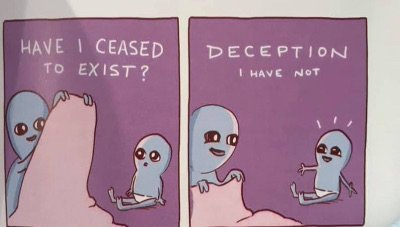

–Tom Thompson
Over the years The Mind-Tickler has written about many grand consciousness-raising topics.
Under guise of seeming lightness, we have considered awareness, enlightenment, vastness, self, no-self, thought, mind, suffering, free will, choice, and happiness. We’ve examined the nature of reality, and whether there even is such a thing.
We have quoted philosophers, mathematicians, neuroscientists, and physicists.
If that isn’t grand and serious business, I don’t know what is.
Mixed in with all of that importance have been many Mind-Ticklers covering the not-in-the-least grand. Perhaps even the downright ridiculous.
As in, y’know, the human.
The What-the-Hells of everyday life. The money and health worries, mistakes, failures, lack of motivations, shames, politics. The social media block buttons, laundry and housekeeping dust bunnies.
Yep. Not grand.
Why does The Mind-Tickler bother with such untranscendent nonsense? Why even talk about the mundane tribulations of the false self?
I mean, it’s not real anyway.
Shouldn’t we stick to loftier discussions where enlightenment might happen, and human messes no longer apply?
Let’s face it, lots of good folks reading The Mind-Tickler hope that some right words will catapult them into the vastness of enlightenment, thereby making human ego - the convoluted, angry, scared, sad, regret-filled, human ego-
go poof.
Never mind that it’s ego itself which supposedly wants to make itself go poof.
Claiming it really really wants… its own extinction.
And also managing not to notice that said poof has happened to exactly no one through all of known history.
Ramana was still Ramana. Krishnamurti, Nisargadatta- not one was a poofed, unrecognizable, egoless person. Not one transcended their personhood.
Well, that’s inconvenient.
Still, lots of folks hope to make what they understand is a fictitious character, die or disappear anyway.
Ego-death seems desirable.
Though, what would be left if they were successful and ego did finally poof into nothingness?
Well, that would be - nothing. Nothing is what would be left.
Because the person, the illusion- this is where humans live.
Love, joy, bliss, tears, fury, terror–everything is experienced via the character.
Without the ego as fulcrum through which experience happens, there’s nothing.
Don’t take my word for it. Try experiencing anything, hearing anything, feeling anything, knowing enlightenment is happening, without the illusion of you.
The illusion of you is where everything known is experienced.
That includes enlightenment. That includes awareness of awareness.
In fact, “attaining enlightenment” specifically requires us to NOT go poof.
Because existence requires… existence.
Not non-existence.
Luckily for us ego-types though, the character is where the fun is. The character is what experiences the scary movies, the roller coasters, the tear-filled novellas, ballgames, artistry, chocolate, sex.
Self is where the juice is.
It may be a dream, a stage, a play. It may be a story.
But it's fascinating. And we adore story.
In fact, remove story and what’s left is heavy, dull, dry, uninteresting. What’s left is weighty.
Which is the exact opposite of the blissful transcendence supposedly desired by poof-seekers.
So yes, The Mind-Tickler sometimes turns to everyday tribulations, dramas and pains of the non-existent self.
Why not? It’s fun. And as it happens, all of that is included in consciousness too.
So while till now, disappearing the ego somehow may have seemed like an answer,
since it hasn’t worked so far, maybe we can try something different.
Maybe we can consider enjoying the hell out of ego’s weird and wacky experiences, pleasant or not- rather than continually attempting to escape this human business.
Because Krishnamurti liked Clint Eastwood movies and luxury and cigarettes. Alan Watts liked drugs. Ramana liked his cow and his mountain and his rice cooked just so.
None of them transcended personality.
Escaping ego is not an option.
So we may as well make friends with it.
As is.
And ironically that ego, and the mundane, and the disapproved-of, and the everyday trivialities-
just might be where freedom has lived all along,
Anyway.
Besides, this ego-bound life business will be over soon enough.
No sense rushing that.
Watch Judy on Buddha at the Gas Pump
"I am so appreciative that the insights that come my way do not turn me into an emotionless thing with no personality. I enjoy all the facets of being a so-called 'person' even though I know it is just a play of the elements. The ups and downs. The crazy intellectual mind games. The spiritual types, so careful with their catch phrases and jargon. I would trade all the spiritual nonsense for two french hens any day of the week… Enjoy. Life is the great teacher."
--Gilbert Schultz
Questioner: When people see any personality quirk, they feel there cannot be liberation, as the person doesn’t appear to be perfect.
Tony Parsons: Yes, its gorgeous stuff isn’t it? The mind will find any way it can to get out of this. (Laughter)
